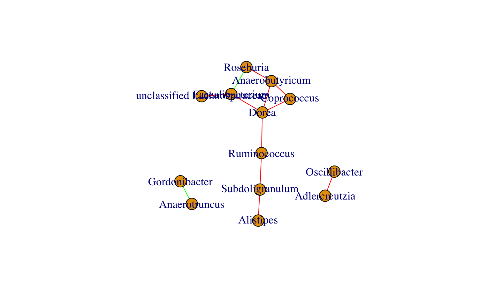

barebonesCoNet.RdBuild a network using Pearson, Spearman, Kullback-Leibler and/or Bray-Curtis.
The original CoNet implementation with extended functionality is available at: http://systemsbiology.vub.ac.be/conet.
For export of data to the original CoNet, see exportToCoNet, for a generic network building function wrapping
barebonesCoNet and other network inference methods, see buildNetwork.
barebonesCoNet(abundances, methods = c("spearman", "kld"), T.up = NA, T.down = NA, method.num.T = 2, pval.T = 0.05, init.edge.num = max(2, round(sqrt(nrow(abundances)))), min.occ = 0, keep.filtered = TRUE, norm = FALSE, stand.rows = FALSE, pval.cor = FALSE, permut = FALSE, renorm = FALSE, permutandboot = FALSE, iters = 100, bh = TRUE, pseudocount = 1e-11, plot = FALSE, verbose = FALSE)
| abundances | a matrix with taxa as rows and samples as columns |
|---|---|
| methods | network construction methods, values can be combinations of: "pearson", "spearman", "kld" or "bray" |
| T.up | upper threshold for scores (when more than one network construction method is provided, T.up is ignored) |
| T.down | lower threshold for scores (when more than one network construction method is provided, T.down is ignored) |
| method.num.T | threshold on method number (only used when more than one method is provided) |
| pval.T | threshold on p-value (only used when permut is true); if several methods are provided, only applied after merge |
| init.edge.num | the number of top and bottom initial edges (init.edge.num overrides T.up/T.down, set to NA to respect T.up/T.down for a single method) |
| min.occ | only keep rows with at least the given number of non-zero values (carried out before network construction) |
| keep.filtered | sum all filtered rows and add the sum vector as additional row |
| norm | normalize matrix (carrried out after filtering) |
| stand.rows | standardize rows by dividing each entry by its corresponding row sum, applied after normalization |
| pval.cor | compute p-values of correlations with cor.test (only valid for correlations; takes precedence over permut and/or permutandboot with or without renorm) |
| permut | compute p-values on edges with a permutation test |
| renorm | compute p-values with a permutation test, using renormalization (only applied to correlations) |
| permutandboot | compute p-values from both permutation (with or without renorm) and bootstrap distribution |
| iters | number of iterations for the permutation test |
| bh | multiple-test-correct using Benjamini-Hochberg; if several methods are provided bh is applied to merged p-value |
| pseudocount | count added to zeros prior to taking logarithm (for KLD, p-value merge and significance) |
| plot | plot score or, if permut or pval.cor is true, p-value distribution |
| verbose | print the number of positive and negative edges and, if permut is true, details of p-value computation |
igraph object with absolute association strengths, number of supporting methods or, if permut or pval.cor is true, significances (-1*log10(pval)) as edge weights
If renorm and permutandboot are both set to TRUE, p-value computation is equal to the ReBoot procedure implemented in CoNet. If more than one method is selected and p-value computation is enabled, p-values are merged with Fisher's method, multiple testing correction (if enabled) is applied on the merged p-value and the merged p-value is reported. If p-value computation is not enabled, the method number is reported as association strength. Note that for a single dissimilarity method, weights are scaled to the absolute distance from the mean value (for bounded Bray Curtis, this is 0.5 and for KLD, this is the mean of the observed scores), such that a larger edge weight means a stronger association. Edge signs (co-presence/mutual exclusion) are assigned using thresholds (T.up/T.down directly or indirectly via top/bottom initial edge number). Co-presence (high correlation/low dissimilarity) is encoded in green, mutual exclusion (low correlation/high dissimilarity) in red and sign conflicts (lack of agreement between methods) in gray.
data("ibd_taxa") data("ibd_lineages") ibd_genera=aggregateTaxa(ibd_taxa,lineages = ibd_lineages,taxon.level = "genus")#> [1] "Number of higher-level taxa: 71"min.occ=nrow(ibd_genera)/3 # p-values for the 50 strongest positive and 50 strongest negative Spearman correlations plot(barebonesCoNet(ibd_genera,methods="spearman",init.edge.num=50,min.occ=min.occ,pval.cor=TRUE))#> [1] "Network construction with method(s): spearman" #> [1] "Processing method spearman" #> [1] "Lower threshold for initial edge number (50): -0.289093084514899" #> [1] "Upper threshold for initial edge number (50): 0.477834957643167" #> [1] 55 55#> Warning: Cannot compute exact p-value with ties#> Warning: Cannot compute exact p-value with ties#> Warning: Cannot compute exact p-value with ties#> Warning: Cannot compute exact p-value with ties#> Warning: Cannot compute exact p-value with ties#> Warning: Cannot compute exact p-value with ties#> Warning: Cannot compute exact p-value with ties#> Warning: Cannot compute exact p-value with ties#> Warning: Cannot compute exact p-value with ties#> Warning: Cannot compute exact p-value with ties#> Warning: Cannot compute exact p-value with ties#> Warning: Cannot compute exact p-value with ties#> Warning: Cannot compute exact p-value with ties#> Warning: Cannot compute exact p-value with ties#> Warning: Cannot compute exact p-value with ties#> Warning: Cannot compute exact p-value with ties#> Warning: Cannot compute exact p-value with ties#> Warning: Cannot compute exact p-value with ties#> Warning: Cannot compute exact p-value with ties#> Warning: Cannot compute exact p-value with ties#> Warning: Cannot compute exact p-value with ties#> Warning: Cannot compute exact p-value with ties#> Warning: Cannot compute exact p-value with ties#> Warning: Cannot compute exact p-value with ties#> Warning: Cannot compute exact p-value with ties#> Warning: Cannot compute exact p-value with ties#> Warning: Cannot compute exact p-value with ties#> Warning: Cannot compute exact p-value with ties#> Warning: Cannot compute exact p-value with ties#> Warning: Cannot compute exact p-value with ties#> Warning: Cannot compute exact p-value with ties#> Warning: Cannot compute exact p-value with ties#> Warning: Cannot compute exact p-value with ties#> Warning: Cannot compute exact p-value with ties#> Warning: Cannot compute exact p-value with ties#> Warning: Cannot compute exact p-value with ties#> Warning: Cannot compute exact p-value with ties#> Warning: Cannot compute exact p-value with ties#> Warning: Cannot compute exact p-value with ties#> Warning: Cannot compute exact p-value with ties#> Warning: Cannot compute exact p-value with ties#> Warning: Cannot compute exact p-value with ties#> Warning: Cannot compute exact p-value with ties#> Warning: Cannot compute exact p-value with ties#> Warning: Cannot compute exact p-value with ties#> Warning: Cannot compute exact p-value with ties#> Warning: Cannot compute exact p-value with ties#> Warning: Cannot compute exact p-value with ties#> Warning: Cannot compute exact p-value with ties#> Warning: Cannot compute exact p-value with ties#> Warning: Cannot compute exact p-value with ties#> Warning: Cannot compute exact p-value with ties#> Warning: Cannot compute exact p-value with ties#> Warning: Cannot compute exact p-value with ties#> Warning: Cannot compute exact p-value with ties#> Warning: Cannot compute exact p-value with ties#> Warning: Cannot compute exact p-value with ties#> Warning: Cannot compute exact p-value with ties#> Warning: Cannot compute exact p-value with ties#> Warning: Cannot compute exact p-value with ties#> Warning: Cannot compute exact p-value with ties#> Warning: Cannot compute exact p-value with ties#> Warning: Cannot compute exact p-value with ties#> Warning: Cannot compute exact p-value with ties#> Warning: Cannot compute exact p-value with ties#> Warning: Cannot compute exact p-value with ties#> Warning: Cannot compute exact p-value with ties#> Warning: Cannot compute exact p-value with ties#> Warning: Cannot compute exact p-value with ties#> Warning: Cannot compute exact p-value with ties#> Warning: Cannot compute exact p-value with ties#> Warning: Cannot compute exact p-value with ties#> Warning: Cannot compute exact p-value with ties#> Warning: Cannot compute exact p-value with ties#> Warning: Cannot compute exact p-value with ties#> Warning: Cannot compute exact p-value with ties#> Warning: Cannot compute exact p-value with ties#> Warning: Cannot compute exact p-value with ties#> Warning: Cannot compute exact p-value with ties#> Warning: Cannot compute exact p-value with ties#> Warning: Cannot compute exact p-value with ties#> Warning: Cannot compute exact p-value with ties#> Warning: Cannot compute exact p-value with ties#> Warning: Cannot compute exact p-value with ties#> Warning: Cannot compute exact p-value with ties#> Warning: Cannot compute exact p-value with ties#> Warning: Cannot compute exact p-value with ties#> Warning: Cannot compute exact p-value with ties#> Warning: Cannot compute exact p-value with ties#> Warning: Cannot compute exact p-value with ties#> Warning: Cannot compute exact p-value with ties#> Warning: Cannot compute exact p-value with ties#> Warning: Cannot compute exact p-value with ties#> Warning: Cannot compute exact p-value with ties#> Warning: Cannot compute exact p-value with ties#> Warning: Cannot compute exact p-value with ties#> Warning: Cannot compute exact p-value with ties#> Warning: Cannot compute exact p-value with ties#> Warning: Cannot compute exact p-value with ties#> [1] "Associations computed for 55 taxa" #> [1] "Network has 99 edges."# combine Bray Curtis and Spearman without computing p-values plot(barebonesCoNet(ibd_genera,methods=c("spearman","bray"),init.edge.num=50,min.occ = min.occ))#> [1] "Network construction with method(s): spearman, bray" #> [1] "Upper and lower threshold are ignored when more than one method is selected." #> [1] "Processing method spearman" #> [1] "Lower threshold for initial edge number (50): -0.289093084514899" #> [1] "Upper threshold for initial edge number (50): 0.477834957643167" #> [1] 55 55 #> [1] "Processing method bray" #> [1] "Lower threshold for initial edge number (50): 0.668982033559373" #> [1] "Upper threshold for initial edge number (50): 0.995722270123443" #> [1] 55 55 #> [1] "Associations computed for 55 taxa" #> [1] "Merging methods..." #> [1] "Network has 16 edges."